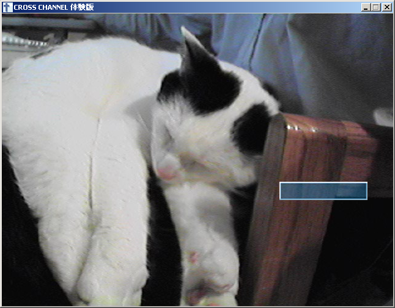
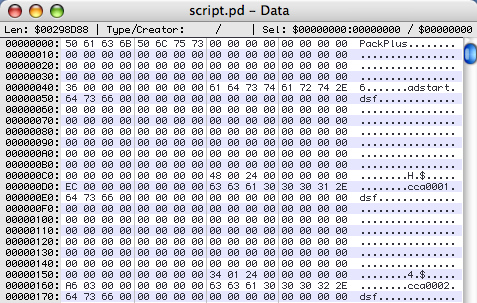
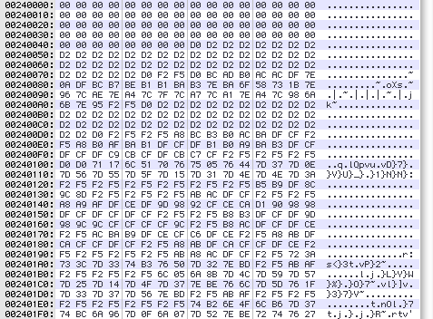
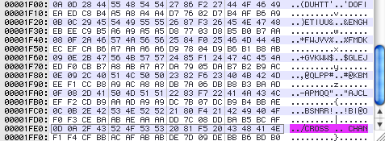

So You Want To Be a Hacker? Part III: Code Prototyping
In the last installment, we analyzed the Cross+Channel archive format with our trusty hex editor, and after a proof-of-concept manual image extraction, we believe we know what’s going on in that file. But of course there’s only one way to be sure: build some tools, and try to modify the game!
So today we’re going to run through some quick code prototyping to create some suitable tools for dealing with the archives. My intention is to make this as simple and straightforward as possible, so if you come out of this installment saying, “You mean that’s all I have to write to hack a game?!” then… mission accomplished.
What language should we use? Ordinarily I work in C, but I want to get something out of this series too, so instead we’re going to use Python, which is a bit of a learning experience for me as well. The main advantages of this are:
- Cross-platform. It’s available for Windows, Linux, and Mac OS, and it unifies some inherent differences like directory-path separators.
- Good mix of levels. There are flexible high-level data structures, like hash-table dictionaries and function continuations, as well as decent low-level bit manipulations.
- Intuitive syntax. Python is almost like executable pseudocode, so if you know virtually any other language, you should be able to read it without trouble.
- Interactive mode. If you want to, you can just type in commands one by one and have them execute immediately. This is great for avoiding a slow edit-recompile-test step during prototyping.
The main disadvantage, unfortunately, is speed. Python just can’t compare to C or other to-the-metal compiled languages for serious bit-crunching. For our purposes this isn’t very important yet, and when it becomes an issue there’s actually some pretty good Python/C interface features available for us to mix and match code when we need to.
So, if you’re on Mac OS X, you probably have Python already. If you’re on Linux, you either have it or can grab a package for your distribution without much trouble. If you’re on Windows, there’s an installer for you too. Grab a copy and follow along!
What sorts of routines will we need to get started? Well, let’s review the archive format we determined last time:
- Signature string PackOnly
- 56 bytes of zeroes
- 8-byte little-endian file count
- 144-byte file entry records consisting of:
- 128-byte filename, zero-terminated
- 8-byte little-endian file offset (from beginning of archive)
- 8-byte little-endian file size
- The files, uncompressed and unencrypted, at their offsets.
So it looks like we’ll need routines to:
- Read/write integers of specific lengths and endianness
- Read/write zero-terminated strings
- Check signatures and known runs of zeroes
No sweat! These sorts of utility routines will come in handy from here on out, so once we write them we can use them for subsequent games as well. Let’s attack the integers for example:
def read_unsigned(infile, size = 4, endian = LITTLE_ENDIAN) :
result = long(0)
for i in xrange(size) :
temp = long(ord(infile.read(1)))
if endian == LITTLE_ENDIAN :
result |= (temp << (8*i))
elif endian == BIG_ENDIAN :
result = (result << 8) | temp
return result
Depending on your background, this code snippet is either completely trivial or completely confusing. Basically, it’s just reading one byte at a time from a file, and shifting those bits to the proper numerical value to build up a multi-byte number, depending on whether the bytes are ordered least-significant-digit-first (little endian), or most-significant-digit-first (big endian).
The rest of the stuff we’ll need is similar, and honestly not really worth discussing in detail. I’ve helpfully put together a quick package of utility routines which you can download as insani.py and use if you like.
Now we get on to the meat of the problem, reading and writing the archive!
We can basically just run through our archive specification above and turn it into code. First the signature and header:
from insani import *
arcfile = open('cg.pd','rb')
assert_string(arcfile,'PackOnly',ERROR_ABORT)
assert_zeroes(arcfile,56,ERROR_WARNING)
numfiles = read_unsigned(arcfile,LONG_LENGTH)
print 'Extracting %d files...' % numfiles
Here I’m using the assert_string() and assert_zeroes() utility routines from insani.py to check for the file signature and the zeroes we expect. The LONG_LENGTH constant is just 8, the length of our integer, and little-endianness is implied as the default value.
The major thing to make note of here is error-checking. I don’t mean “normal” error-checking like making sure the file opened properly or that you have enough memory to read an 8-byte integer, etc. That’s kind of silly for a prototype tool: we don’t care a whole lot if it crashes when the file can’t be read, as that’s sort of the behavior we want.
No, I mean, error-checking our assumptions about the archive. You see, we could have just skipped the first 64 bytes of the file entirely and jumped right to that numfiles read statement. That’s the only information we actually need, right? Why are we bothering to check the signature, or check those zeroes?
We’re doing that because we’re still testing our understanding of the file… we’ve only really looked at a small percentage of one archive file from one game. Are those 56 zeroes really useless? Always? We’re just not sure. So if the tool runs across something that it doesn’t expect — i.e. that we don’t expect — then we want to know about it, and either abort for “now I’m totally confused” cases or at least print a warning for less critical discrepancies so we can inspect the situation more carefully and revise the tool.
Okay, enough about that. Just trust me: build in the extra logic to check your assumptions rather than always jumping to the known-important info. Now on to reading the index:
print 'Reading archive index...' entries = [] for i in xrange(numfiles) : filename = read_string(arcfile) assert_zeroes(arcfile,128-len(filename)-1) position = read_unsigned(arcfile,LONG_LENGTH) size = read_unsigned(arcfile,LONG_LENGTH) entries.append( (filename, position, size) ) assert_zeroes(arcfile,144*(16384-numfiles),ERROR_WARNING)
Here we’re using some Python magic to make our lives easier. After reading the filename, position, and size, we just collect the three variables together into a “tuple” denoted by the extra parentheses, and push that onto the end of our entries linked list. Doing the same thing in C would be a bit more complicated, but here it’s almost pseudocode. Again, notice the assertion statements: every single byte of this file is getting examined, and either its data is being used or its status as uninteresting is being checked.
Now, we complete the process, and actually write out the files, and do a little clean-up:
for (filename, position, size) in entries :
print 'Extracting %s (%d bytes) from offset 0x%X' % \
(filename, size, position)
outfile=open(filename,'wb')
assert (arcfile.tell() == position)
outfile.write( arcfile.read(size) )
outfile.close()
assert (arcfile.read(1) == '')
arcfile.close()
The loop structure is another nice bit of Python: we can just iterate through our entries list trivially, pulling off a whole tuple at a time and using those variables again. Instead of the assert statement, we could have just done a arcfile.seek(position) command to jump to the offset we know we want, but here we’re still testing our knowledge of the archive format: are the files stored in order, with no gaps between them like we think? And after all the files, are we really at the end of the archive, or is there more data we’ve neglected?
If we’ve done everything correctly, there shouldn’t be any surprises. So let’s try it. You can download crosschannel-extract1.py if you like, but I’d recommend you implement your own, or at least type it in to get a feel for the language:
% python crosschannel-extract1.py Extracting 545 files... Reading archive index... Extracting bgcc0000e.png (8370 bytes) from offset 0x240048 Extracting bgcc0023.png (538382 bytes) from offset 0x2420FA ... Extracting TCYM0005c.png (156881 bytes) from offset 0x566E1B4
Seems to have worked, and all of the PNG files are viewable in your favorite image editor. Ummm, although a few of them are NSFW, by the way. ^^;
The proof-of-concept extraction works. Now we can improve things just a little bit, since that hard-coded archive filename certainly sucks. The revised version is crosschannel-extract2.py, which adds some routines from the Python operating-system interface libraries to read parameters from the command line and allow us to extract files to a new subdirectory, etc. I’ve also tweaked the error-checking a little bit, to allow for out-of-order files if we ever run across them, as well as aborting early if we find a position or file size that is “obviously” wrong. Have a look if you like, though it’s not really vital to the thrust of this article.
What we really should be doing is rebuilding the archive now! No sweat. We can just take our code, and adapt it pretty easily to the opposite case. First we need to collect info about the files we want to repack, from a subdirectory name passed on the command line:
import sys, os
from insani import *
dirname = sys.argv[1]
rawnames = os.listdir(dirname)
numfiles = 0
position = 144*16384+72
entries = []
for filename in rawnames :
fullpath = os.path.join(dirname,filename)
if os.path.isfile(fullpath) : # Skip any subdirectories
numfiles += 1
size = os.stat(fullpath).st_size
entries.append( (filename, fullpath, position, size) )
position += size;
While we do this we can compute the ultimate position of each file based on the file sizes and the known sizes of the header and the index. Next we can write those out:
print 'Packing %d files...' % numfiles
arcfile = open(sys.argv[2],'wb')
arcfile.write('PackOnly')
write_zeroes(arcfile,56)
write_unsigned(arcfile,numfiles,LONG_LENGTH)
print 'Writing archive index...'
for (filename, fullpath, position, size) in entries :
write_string(arcfile,filename)
write_zeroes(arcfile,128-len(filename)-1)
write_unsigned(arcfile,position,LONG_LENGTH)
write_unsigned(arcfile,size,LONG_LENGTH)
write_zeroes(arcfile,144*(16384-numfiles))
This is actually kind of easier, since we don’t need to check anything: we are just writing exactly what we know… no uncertainty. You’ll also notice how closely the structure maps to our initial archive description: it’s good to have utility routines so that you can take care of each item in your spec with just a line or two of code. And now we write the files themselves:
for (filename, fullpath, position, size) in entries :
print 'Packing %s (%d bytes) at offset 0x%X' % \
(filename, size, position)
assert (arcfile.tell() == position)
infile = open(fullpath,'rb')
arcfile.write(infile.read(size))
infile.close()
arcfile.close()
Here we’re doing a little bit of sanity-checking with the assert statement, but really that’s just a “stupid programmer” check rather than anything else: if we’ve written everything correctly, that assertion will always be true, regardless of the archive format details. That’s one of the classic uses of an abort-if-false assert statement: to quickly check something which cannot possibly be wrong when the program is operating correctly.
You can grab crosschannel-repack1.py if you like, but again I’d encourage you to write your own. Let’s test:
% python crosschannel-repack1.py temp temp.pd Packing 545 files... Writing archive index... Packing bgcc0000a.png (408458 bytes) at offset 0x240048 Packing bgcc0000b.png (436171 bytes) at offset 0x2A3BD2 ... Packing xiconp.png (2399 bytes) at offset 0x5693D26
The gold standard of a successful tool is to be able to extract and repack an archive to a bit-perfect replica of the original. Have we succeeded?
% diff cg.pd temp.pd Binary files cg.pd and temp.pd differ
Urgh, no. Well, it’s kind of to be expected… the files aren’t getting packed in the same order, since our repackaged archive gets its directory list in alphabetical order, whereas the original archive is more random. Does that matter? We’re not sure.
The silver standard of a successful tool is to be able to extract its own archives successfully. So we extract, repack, and then extract again and make sure the first extraction is identical to the second.
% python crosschannel-extract2.py temp.pd temp2 Extracting 545 files... ... % diff -r temp temp2
And that works. Okay, so our extraction and repacking tools are internally compatible. Are they compatible with the game, though?
Here is one helpful trick of the trade. The first time you test a rebuilt archive, change nothing. Just extract the game’s own archive, repack it, and see if the game still runs. This way you can see whether, for instance, the game has an MD5 checksum for the archive stored in the executable, or whether you’re missing something about the archive format. Once you pass this hurdle, then you can start changing files and inserting English and so forth.
To make a long story short, that works. There thankfully doesn’t seem to be any checksum weirdness going on, or features of the archive we haven’t fully reproduced (the file ordering could have mattered, after all).
The next step is to try altering something. How about the main title screen graphic? That happens to be x0000.png, so we can just drop in our own 640×480 PNG file, rebuild the archive, and see what happens…

The extra colored rectangle is part of the main menu highlighting system. Looks like we’re doing pretty well… most of the UI resources are just stored as PNGs, so our translator and graphic editor ought to be able to make over this game’s interface with these tools, no problem.
But wait… what about the game script!
% python crosschannel_extract2.py script.pd script Expected "PackOnly" at position 0x0 but saw "PackPlus". Aborting! Traceback (most recent call last): ...
PackPlus?! Uh-oh. But now the wisdom of our error-checking is somewhat revealed… we know immediately that something weird is going on in the script archive, rather than extracting garbage and trying to make sense of it at some later step. Let’s fall back on our hex editor and take a look.

Well, it looks pretty normal, actually. All the zeroes are still there; there’s what looks like a file-count, and filenames, positions, and sizes. If you scroll down you’ll see nothing but zeroes out to offset 0×240048, just like before. So the entire header and index is the same, apart from the file signature itself. Is this a complete no-op?
Ah, but look at the files themselves:

This is kind of weird. The bytes aren’t random-looking — there are long strings of constant values — so it’s probably not really compressed or encrypted. There’s also a high proportion of large values, above 0×80, which is unusual.
So we’re probably looking at some sort of basic “encryption” here, the ever-popular XOR/add-with-a-constant-byte algorithm, suitable for protecting your files from your six-year-old sister… assuming she doesn’t code, anyway.
We could just guess the answer… and in fact if you guess you’ll get it right. But you know what, I’m lazy, so I’m just going to brute-force this with some quick code.
arcfile=open('script.pd','rb')
arcfile.seek(0x240076)
data=arcfile.read(16)
outfile=open('bruteforce.dat','wb')
for i in xrange(256) :
for temp in data :
outfile.write(chr(ord(temp) ^ i))
for temp in data :
outfile.write(chr((ord(temp) + i) & 0x00FF))
outfile.close()
arcfile.close()
I’m just reading in 16 bytes of data (chosen to match my hex-editor width) at an interesting-looking offset, XORing and adding all possible byte values to that string, and writing it out to a file to examine. Scanning through this 8KB file by eye takes like 10 seconds, and we find:

Wow, recognizable text, at the very end of the file… always in the last place you look. So this corresponds to an XOR by 0xFF, or just flipping all the bits in the file, which is precisely what you might have guessed anyway. My point here is really that when you’re not sure, don’t be afraid to do a little experimentation… writing the above code snippet and scanning through some possibilities is the work of 5 minutes, tops, whereas you can easily bang your head against some unknown simple encryption for hours or days if you’re not feeling sufficiently clever sometimes.
Now we can update our extraction tool to account for this. It’s a pretty easy modification to the header code:
signature = arcfile.read(8)
if signature == 'PackOnly' :
xorbyte = 0
elif signature == 'PackPlus' :
xorbyte = 0x00FF
else :
print 'Unknown file signature %s, aborting.' % \
escape_string(signature)
sys.exit(0)
and to the file-reading code:
data = array('B',arcfile.read(size))
if xorbyte != 0 :
for i in xrange(len(data)) :
data[i] ^= xorbyte
outfile.write(data.tostring())
This part is slightly confusing if you’re not familiar with Python. The standard Python string is an immutable data type, so you can’t just XOR all the bytes without making a zillion new copies of the string. Instead we read it into a mutable unsigned-byte array. You’ll need to add a from array import array line at the top of your file to allow this too, since the array module isn’t part of the core language. The new version is crosschannel-extract3.py.
% python crosschannel-extract3.py script.pd script Extracting 54 files... Reading archive index... Extracting adstart.dsf (236 bytes) from offset 0x240048 Extracting cca0001.dsf (934 bytes) from offset 0x240134 ... Extracting cca0011c.dsf (6674 bytes) from offset 0x297376
Looks like we’re in business. The extracted scripts open normally in a text editor, using Shift-JIS character encoding. With a little snooping around, we can see that the file cca0001.dsf is the start of the main game script. A little editing, a quick repack (we don’t even need to bother with PackPlus when we make our own archive), and presto!

Note that I have skipped over some complexity in that last step, doing things like word-wrapping the line manually and making sure that the game engine gets CR-LF line breaks as opposed to just LF. There’s more weirdness lurking there too… I don’t mean to imply that the script format is trivial, merely that it’s now open to further experimentation beyond the scope of this article.
Where to go from here? As a homework assignment, you should try experimenting with this code, or even better writing your own in your language of choice. And how about those 2.3MB of zeroes in the archive format… will the engine object if you take that out and start file storage right after the index to save space? Can you write a routine which will word-wrap the script automatically when packing it into an archive? How about the kanji in the window title bar? What other problems will you run across in trying to do a full translation of this title?
But for now, this is all that I plan to use Cross+Channel for… we’ve cracked it wide open, and there’s not a huge amount more to learn here. This is a legitimate accomplishment, because this is a real game that’s on the market and that people would like to translate. However, it’s also a very simple example. The archive had no compression and minimal encryption; the graphics files were a standard format; the script files are plaintext; and there was no integrity checking in the game or need to touch the executable at all.
Any or all of these characteristics could have meant a lot of work for us if they went the other way. So, in the next few installments, I’ll be picking other games to give good examples of more complicated situations, focusing on one of these areas at a time. Feel free to suggest games that you would like to see covered, though there’s no guarantee I’ll know anything about them, of course. Heh.
Wow! Great article, Ed; I never knew that bit fiddling and reading could be so -easy-!
I really can’t believe that’s -it-.
Bah, Python. You should have used OCaml, which has all the same advantages without any of Python’s disadvantages (slow as molasses, no ahead-of-time type checking, significant whitespace).
Thinking purely from systems I’ve hacked myself: Majiro has a nice proprietary graphics format which is ugly rather than complex (it’s a silly RLE-taken-to-extremes system). AVG32 has simple compression (without encryption) and a relatively simple bytecode format, but more importantly has some interesting bugs that one has to work around; it’s also a good example of a case where there’s existing Japanese work that can be built on by the Western hacker. And, as you know all too well, RealLive is a great example of a system where tools already exist but are so flaky and unreliable that using them is practically a hacking experience in itself. No, wait, scratch that last one… :P
Oops, the blasted software stripped out my <bigotry type=”flamebait”> tags around the first paragraph there…
I would suggest that the python struct module may be quite useful for something like this. With this module, the code to read a file entry from the archive becomes:
(Snipped, see below. -Ed)
Not tested or anything, but the use of struct.unpack should simplify the handling of binary data.
Sorry about Wordpress screwing up the formatting. Here’s PyTom’s code:
print 'Reading archive index...' entries = [] for i in xrange(numfiles) : data = arcfile.read(144) filename, position, size = struct.unpack("<128sqq") filename = filename.strip("\0") entries.append( (filename, position, size) ) assert_zeroes(arcfile,144*(16384-numfiles),ERROR_WARNING)Indeed, that’s an awesome tip, thanks! Should have known someone else had already solved that problem for me.
“… a great example of a system where tools already exist but are so flaky and unreliable that using them is practically a hacking experience in itself.”
Are you sure you’re not talking about onscripter-insani here? -_-
I copy-paste these functions in most of my dumping scripts:
Me-Wordpress 0:1
orz
I sincerely apologize for Wordpress messing up code snippets… I’ve now installed a plugin which should fix this, so code enclosed within <code> </code> tags ought to preserve formatting and autoescape special characters now.
roxfan, care to give that a second try? Alternately you can email me what you wanted to post and I can fix your previous comment.
Try #2
It’s nothing special but having these snippets handy helps me quite often.
A predictable, but noteworthy observation — the game doesn’t care which of the two formats it’s archives are in. In the case of simple XOR encryption this isn’t much use, but in cases where decryption and encryption are separate it might be useful to try replacing an encrypted archive with an unencrypted one. (eg, would this have worked for Planetarian, where AFAIR decryption was circumvented by grabbing the files from RAM? That RealLive looks for files on disk before it looks for them in archives is even easier, but perhaps something to consider should that feature ever be removed…)
Yep, that does come up a lot. Games will sometimes have a separate method to read data, especially as a debugging or a patch-insertion mechanism, such as “check to see if the file just exists on disk, then look in the archive if it’s not there”. Alternately, there’s often an uncompressed storage format within the archive you can use for simplicity… as long as the compression flag itself is part of the data format, the game engine will read it correctly. And last but not least, you can sometimes save yourself a lot of work by implementing a graphics format or a compression algorithm “stupidly” and quickly, i.e. if the compression algorithm allows you to use an escape code to insert a raw byte into a compressed data stream, just escape every byte! (It’s nice to go back and do it properly for the final release, though.)
For the full version of Planetarian the DRM meant that we couldn’t alter some files without some serious effort, but fortunately there was a back-door method of having the engine read an unprotected version instead. Saved a lot of work, and maybe even made the whole thing possible at all, since disabling the DRM entirely would have been something of an ethical problem for us.
Note, however, that RealLive’s “external” files are in fact compressed and slightly encrypted, because RealLive handles compression on the file level not the archive level. So while there was a gain for a Kinetic Novel, because it has an additional global archive layer with hideous encryption, this would not have been a useful shortcut for a regular RealLive game: the engine requires you to do all the hard work of compression and encryption whether the file goes in an archive or not.
Another similar thing to look out for is games that accept standard formats in addition to their private ones. For example, most Majiro games seem to use the proprietary and icky Rokucho format for their images, but I haven’t wasted any time trying to write a decent Rokucho compressor because the engine will just as happily use PNGs. And many RealLive games insist on using the proprietary NWA format for audio — but if you want to edit or replace the audio, you can just use Ogg Vorbis.
if you want to put the code in a website wher can you put it
for debtfree for debtfree
avenged sevenfold desease sevenfold of avenged